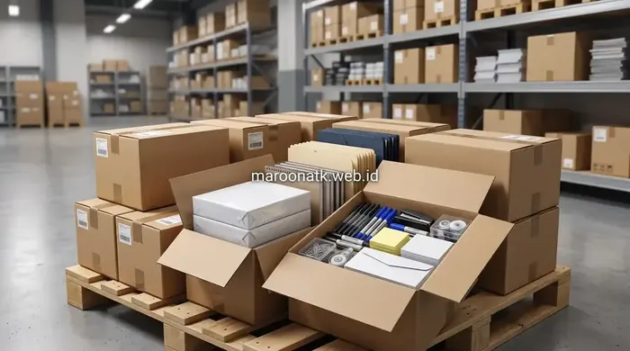

Mengenal Konsep dan Definisi Paket Pengadaan Alat Tulis Kantor B2B
Paket pengadaan alat tulis kantor B2B adalah metode pemenuhan suplai perlengkapan kantor secara bundling terencana yang mencakup kertas HVS 80gr, toner printer original, ordner arsip, amplop dinas, dan alat tulis esensial dalam satu kontrak pengiriman berkala. Pendekatan ini memungkinkan perusahaan mengunci harga kontrak kompetitif, menyederhanakan Surat Penawaran Harga (SPH), serta menerbitkan e-Faktur PPN 11% tunggal yang mempercepat proses rekonsiliasi laporan keuangan bulanan.
Dalam operasional perusahaan sehari-hari, kebutuhan perlengkapan administrasi kantor seperti kertas dokumen, binder arsip, dan tinta printer sering kali dianggap sebagai urusan logistik minor. Namun, jika ditinjau dari kacamata manajemen keuangan dan procurement, pembelian barang habis pakai yang dilakukan tanpa sistem terintegrasi sering menjadi sumber kebocoran anggaran tersembunyi (hidden procurement cost).
Banyak divisi General Affairs (GA) dan Purchasing menghabiskan puluhan jam setiap bulannya hanya untuk melayani permintaan mendadak dari berbagai departemen, mencari toko terdekat, membandingkan harga eceran, hingga mengumpulkan tumpukan struk belanja fisik. Solusi modern untuk menuntaskan masalah inefisiensi ini adalah beralih ke skema paket pengadaan alat tulis kantor yang dirancang khusus untuk skala B2B korporat.

Spesifikasi Paket Pengadaan Alat Tulis Kantor Bulanan B2B
Rincian komponen, spesifikasi gramatur kertas, dan estimasi kuota pemakaian paket ATK bulanan untuk perusahaan dan instansi.
Perbedaan Fundamental: Pembelian Eceran vs Sistem Paket Pengadaan B2B
Mengapa perusahaan skala bertumbuh dan instansi pemerintah sangat disarankan meninggalkan metode pengadaan eceran ad-hoc? Perbedaan mendasarnya terletak pada pendekatan manajemen rantai pasok dan beban operasional tim pendukung.
Pada model eceran, transaksi terjadi secara sporadis ketika persediaan di gudang sudah habis (stockout). Tim operasional harus membuat purchase requisition berulang kali, staf purchasing menerbitkan purchase order baru setiap minggu, dan kasir keuangan harus memproses reimbursement nota kas kecil. Sebaliknya, sistem paket B2B menetapkan matriks kebutuhan berkala berdasarkan konsumsi riil kantor yang dikirimkan terjadwal oleh supplier resmi.

Penerapan sistem paket pengadaan ATK B2B memudahkan manajemen kantor dalam mendistribusikan kebutuhan logistik ke seluruh divisi secara terukur dan tepat waktu.
Matriks Perbandingan Pengadaan ATK Eceran vs Paket B2B
Tabel berikut menyajikan komparasi menyeluruh antara pengadaan konvensional eceran dengan sistem paket terintegrasi dari mitra procurement korporat:
| Metode Pengadaan | Frekuensi Pemesanan | Beban Administrasi | Kemudahan Pembukuan | Efisiensi Procurement | Kesesuaian untuk Perusahaan/Instansi |
|---|---|---|---|---|---|
| Pembelian Eceran (Ad-Hoc) | Sangat tinggi (5–12 kali per bulan secara mendadak) | Sangat berat; tumpukan nota kecil & banyak formulir kasbon | Rentan selisih, sulit rekonsiliasi pajak PPN, pembukuan terfragmentasi | Rendah; harga tidak stabil dan memakan waktu staf GA | Hanya cocok untuk usaha mikro / kebutuhan darurat individual |
| Sistem Paket Pengadaan B2B | Terjadwal teratur (1 kali per bulan atau per kuartal) | Sangat ringan; 1 SPH resmi, 1 PO, dan 1 BAST per periode | Sangat rapi, didukung e-Faktur PPN 11% resmi untuk audit | Tinggi; harga terkunci dalam kontrak, hemat biaya logistik | Standar wajib bagi korporat, startup bertumbuh, & instansi pemerintah |

Panduan Memilih Supplier ATK Jakarta Terpercaya
Kriteria legalitas, kredibilitas PT, dan transparansi invoice yang wajib diperiksa purchasing team saat memilih supplier kantor.
Keuntungan Strategis Sistem Paket Pengadaan ATK bagi Korporat
Mengadopsi sistem paket pengadaan dari penyedia terpercaya seperti Maroon ATK memberikan dampak positif yang langsung dirasakan oleh berbagai divisi di perusahaan:
1. Efisiensi Administratif dan Penghematan Waktu Purchasing
Dengan model paket bulanan, purchasing team tidak perlu lagi membuang waktu memproses puluhan faktur belanja kecil setiap minggu. Semua kebutuhan divisi operasional dikonsolidasikan ke dalam satu pesanan terpadu. Hal ini membebaskan jam kerja staf GA untuk fokus pada tugas-tugas strategis lainnya.
2. Efisiensi Pembukuan, Akuntansi, dan Dokumentasi Pajak
Departemen Finance sering kali dipusingkan dengan bukti kas keluar yang tidak seragam dari berbagai toko retail. Melalui sistem paket B2B, perusahaan menerima faktur komersial terperinci, kuitansi bermaterai, serta e-Faktur PPN 11% yang sah. Dokumen ini mempermudah pelaporan SPT Masa PPN dan memenuhi standar audit akuntansi keuangan.
3. Pengendalian Anggaran Operasional dan Stabilitas Harga
Harga barang di pasaran umum dapat berfluktuasi sewaktu-waktu akibat kenaikan harga bahan baku kertas atau nilai tukar mata uang. Dalam kontrak paket pengadaan B2B, harga unit barang disepakati dan dikunci selama durasi perjanjian, melindungi kas perusahaan dari lonjakan harga mendadak.
4. Kemudahan Monitoring Stok dan Alur Approval Internal
Persetujuan anggaran (budget approval) menjadi jauh lebih sederhana karena manajemen tingkat atas hanya perlu menyetujui satu dokumen SPH berkala dengan plafon biaya yang pasti, daripada menandatangani persetujuan kecil setiap beberapa hari sekali.

10 Kesalahan Fatal dalam Pengadaan ATK
Hindari pemborosan budget dan barang tidak terpakai dengan memahami jebakan umum procurement perlengkapan kantor.
Kapan Perusahaan Sebaiknya Mulai Menggunakan Sistem Paket?
Bila perusahaan Anda mengalami minimal dua dari tanda-tanda berikut, maka saatnya beralih ke model pengadaan paket:
- Jumlah karyawan aktif telah melebihi 15 orang dengan volume cetak dokumen rutin harian.
- Sering terjadi keluhan internal mengenai kehabisan kertas HVS atau tinta printer di tengah tenggat waktu kerja penting.
- Staf keuangan mengeluhkan banyaknya struk belanja tanpa identitas NPWP yang menyulitkan rekonsiliasi pajak.
- Terdapat variasi merek ATK yang tidak seragam di antara meja kerja staf, sehingga menimbulkan kesan tidak profesional saat menerima kunjungan klien.
Anda dapat meninjau beragam pilihan kebutuhan melalui katalog ATK Maroon ATK untuk memetakan item-item esensial yang paling relevan dengan alur kerja tim Anda.
Faktor Kritis yang Perlu Diperhatikan Sebelum Memilih Paket
Sebelum menandatangani kesepakatan pengadaan paket, tim purchasing disarankan melakukan beberapa evaluasi teknis:
- Legalitas Penyedia: Pastikan vendor berbentuk badan usaha resmi (PT) dengan NPWP dan rekening giro perusahaan terdaftar.
- Kualitas dan Keaslian Produk: Hindari toner isi ulang tanpa jaminan yang dapat merusak drum printer, dan pilih kertas berkualitas seperti PaperOne atau SiDU.
- Fleksibilitas Kustomisasi: Pilih mitra yang bersedia menyesuaikan rasio barang berdasarkan audit konsumsi divisi nyata.
- SOP Pengiriman & Garansi: Pastikan vendor menyediakan Berita Acara Serah Terima (BAST) dan jaminan penggantian cepat jika terdapat cacat pabrik.
Ingin Menyederhanakan Pengadaan ATK Kantor Anda?
Dapatkan konsultasi audit kebutuhan dan SPH resmi dari Maroon ATK
Tim spesialis kami siap membantu merancang simulasi paket pengadaan ATK yang paling hemat dan tepat sasaran untuk organisasi Anda.
Kesimpulan: Transformasi Pengadaan Lebih Cerdas Bersama Paket Pengadaan Alat Tulis Kantor
Poin Keputusan Purchasing
Menerapkan sistem paket pengadaan alat tulis kantor bukan sekadar tentang membeli perlengkapan menulis dalam jumlah banyak, melainkan keputusan manajerial untuk menciptakan efisiensi operasional menyeluruh.
- Birokrasi Ramping: Memangkas frekuensi pemesanan berulang menjadi satu siklus terencana per bulan.
- Akuntabilitas Terjamin: Penerbitan SPH berkop resmi, e-Faktur PPN 11%, dan BAST menjaga kepatuhan audit keuangan.
- Kestabilan Finansial: Mengunci harga satuan dalam kontrak guna mencegah pembengkakan biaya tak terduga.
Pertanyaan Umum (FAQ) Paket Pengadaan ATK B2B
Sistem paket pengadaan alat tulis kantor B2B adalah metode pemenuhan seluruh perlengkapan operasional kantor (seperti kertas HVS, tinta/toner, map arsip, dan alat tulis) dalam satu paket terbundling secara terjadwal, dengan satu Surat Penawaran Harga (SPH), satu Purchase Order (PO), dan satu e-Faktur PPN 11% resmi.
Sistem paket memangkas birokrasi purchasing hingga 70%, mengunci harga kontrak dari fluktuasi pasar, menyederhanakan rekonsiliasi keuangan dari puluhan nota menjadi satu invoice resmi, serta menjamin ketersediaan stok fisik tanpa risiko kehabisan mendadak.
Ya, bersama vendor B2B terpercaya seperti Maroon ATK, spesifikasi paket dapat disesuaikan dengan audit kebutuhan divisi internal, rasio jumlah staf, maupun preferensi merek tertentu seperti PaperOne, SiDU, atau toner original printer kantor.

Arby Ardiansyah
Praktisi pengadaan B2B berpengalaman lebih dari 5 tahun dalam manajemen rantai pasok sarana kantor, optimasi biaya ATK korporat, dan e-procurement instansi pemerintah dan swasta di Indonesia.